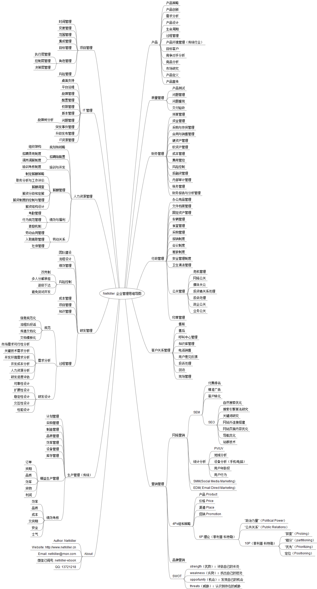

Home
|
简体中文
|
繁体中文
|
杂文
|
打赏(Donations)
|
ITEYE 博客
|
OSChina 博客
|
Facebook
|
Linkedin
|
知乎专栏
|
Search
|
Email
Part I. 管理篇
Prev
Next
Part I. 管理篇
Table of Contents
1. 人力资源管理
1.1. 规划和战略
1.1.1. 愿景管理
1.1.2. 执行力还需方向正确目标明确
1.1.2.1. 什么是执行力
1.1.2.2. 执行力问题出在哪里
1.1.2.3. 执行力与SMART原则
1.1.3. 权力不等于领导力
1.2. 招聘与配置
1.2.1. 面试流程
1.2.2. 找到并留住最佳员工
1.2.2.1. 目前现状
1.2.2.2. 人才分类
1.2.2.3. 简历筛选
1.2.2.4. 电话面试
1.2.2.5. 人才的判断
1.2.2.6. 怎样做一位面试官
1.2.2.6.1. 背景
1.2.2.6.2. 华丽的背景
1.2.2.6.3. 深度提问
1.2.2.6.4. 注重设计与解决问题的能力
1.2.2.6.5. 经验积累
1.2.2.6.6. 职场灰人（高分低能和高学历低能）
1.2.2.7. 薪酬管理
1.2.2.8. 建立人才库
1.2.2.9. 人才挖掘
1.2.2.10. 人才发掘的另一种渠道
1.2.2.10.1. 招聘渠道有哪些
1.2.2.10.2. 还有其他招聘渠道吗？
1.2.2.11. 怎么寻找人才
1.2.2.12. 人才择业会考虑那些条件
1.2.2.13. 鼓励机制
1.2.2.14. 人才投资
1.2.2.15. 关于人才离去
1.2.3. 人力配置
1.2.3.1. 人才利用率
1.3. 培训与开发
1.3.1. 给团队充电
1.3.2. 内部培训
1.3.2.1. 分工、授权、教练
1.3.2.2. 项目驱动学习
1.3.3. 外部培训
1.3.4. 也谈程序猿的职业规划
1.3.5. 脑力工作者的老龄化问题
1.3.5.1. 程序员的记忆力
1.3.5.2. 脑力工作者偏老龄化
1.3.5.3. 老龄化存在的问题
1.3.6. 碎片化学习
1.3.6.1. 系统化学习
1.3.6.2. 碎片化学习
1.4. 薪酬管理
1.4.1. 中国企业的等级制度
1.5. 绩效管理
1.5.1. 管理好管理层
1.5.2. 让员工更敬业
1.5.2.1. 何谓敬业度？
1.5.2.2. 提高员工敬业度，常用办法：
1.5.2.3. 敬业度的认识误区
1.5.2.4. 员工不敬业的表现
1.5.2.5. 员工不敬业是怎样造成
1.5.2.5.1. 战略目标
1.5.2.5.2. 薪酬福利
1.5.2.5.3. 企业信誉
1.5.2.5.4. 沟通受阻
1.5.2.5.5. 发展空间
1.5.2.5.6. 任用外行
1.5.2.5.7. 自我实现
1.5.2.5.8. 办公环境
1.5.2.5.9. 行政制度
1.5.2.6. 总结
1.5.3. 员工激励机制
1.5.3.1. 什么是激励？
1.5.3.2. 为什么要激励？
1.5.3.3. 何时激励员工
1.5.3.4. 在哪激励员工
1.5.3.5. 谁来激励员工
1.5.3.6. 激励的误区
1.5.3.7. 怎样激励员工
1.5.4. 软件行业绩效管理
1.5.4.1. 什么是绩效管理
1.5.4.2. 为什么绩效管理
1.5.4.3. 绩效管理的分类
1.5.4.4. 绩效管理面临的问题
1.5.4.5. 绩效管理的误区
1.5.4.6. 怎样做绩效管理
1.5.4.6.1. 开发模式
1.5.4.6.2. 通过代码提交数量判断其在团队中的贡献
1.5.4.6.3. 目标与达成
1.5.4.6.4. 通过提交日历查看员工的状态
1.5.4.6.5. 团队约束
1.5.4.6.6. BUG率
1.5.4.6.7. 代码审查
1.5.4.7. 鱼骨图
1.5.4.8. 雷达图
1.5.4.9. 全栈开发能力评估
1.5.4.10. 总结
1.5.5. 关于离职率
1.5.5.1. 人员流动带来的问题
1.5.5.2. 人力资源的问题
1.5.5.3. 离职的原因
1.5.5.4. 离职率的考核问题
1.5.6. 企业与员工谁放弃了谁
1.5.6.1. 关于员工放弃企业
1.5.6.2. 关于企业放弃员工
1.5.6.3. 企业与员工谁都不能放弃谁
1.5.7. 优秀员工的十个特征
2. 软件项目管理篇
2.1. 范围管理
2.1.1. 宏观管理
2.1.2. 你清楚你的工作职责吗？
2.1.2.1. 制度管理
2.1.2.2. 权力下放
2.1.2.3. 专业的人做专业的事
2.1.2.4. 总结
2.1.3. 怎样防止踢皮球
2.1.3.1. 进入正题
2.1.3.2. 踢皮球几大害处
2.1.3.3. 场景一
2.1.3.4. 场景二
2.1.3.5. 踢皮球的风气是怎样形成的？
2.1.3.5.1. 责任不明确
2.1.3.5.2. 缺乏沟通
2.1.3.5.3. 背黑锅
2.1.3.5.4. 员工问题
2.1.3.6. 怎样根治踢皮球
2.1.3.6.1. 调整组织架构
2.1.3.6.2. 禁止追查问题源头
2.1.3.6.3. 不懂技术的管理
2.1.3.6.4. 统一目标，价值观。
2.1.3.6.5. 防止问题扩大
2.1.4. 企业内部外包与悬赏
2.1.5. 企业膨胀的原因分析
2.1.5.1. 人才管理
2.1.5.1.1. 先从员工个人谈起
2.1.5.1.2. 技能管理
2.1.5.2. 再说说部门
2.1.5.2.1. 部门膨胀
2.1.5.3. 精细化管理带来的膨胀
2.2. 时间管理
2.2.1. 项目管理中工时计算的问题
2.2.1.1. 背景
2.2.1.2. 面临的问题
2.2.1.3. 工时去了哪里？
2.2.1.3.1. 洗手间，茶水间，吸烟
2.2.1.3.2. 看邮件，写邮件
2.2.1.3.3. 沟通
2.2.1.3.4. 查资料
2.2.1.3.5. 无关的会议
2.2.1.3.6. 不必要的拖延行为
2.2.1.3.7. 私人时间
2.2.1.4. 怎样改善面临的问题
2.2.1.5. 怎样计算项目工时？
2.3. 质量管理
2.3.1. 压力测试中存在的问题
2.3.1.1. (What) 什么是压力测试
2.3.1.1.1. 压力测试存在那些问题
2.3.1.2. (Why) 为什么做压力测试
2.3.1.3. (Where) 在哪里做压力测试
2.3.1.4. (When) 什么时间做压力测试
2.3.1.5. (Who) 压力测试过程参与人员
2.3.1.6. (How) 如何做压力测试
2.3.2. 打破软件自动化测试的格局
2.3.2.1. 自动化测试的误区
2.3.2.2. 分层与部署带来的问题
2.3.2.3. 压力测试存在的问题
2.3.2.3.1. 压力测试环境
2.3.2.3.2. 测试顺序
2.3.2.3.3. 瓶颈分析
2.3.2.3.4. 指导开发
2.3.2.4. 持续集成形同虚设
2.3.2.5. 测试的终极目标
2.4. 沟通管理（Communication Management）
2.4.1. 表达方式
2.4.1.1. 拒绝反问句
2.4.2. 任务分配
2.4.3. 任务确认
2.4.4. 越级和跨部门沟通
2.4.5. 工作例会
2.4.6. 工作报告
2.4.7. 负面信息处理
2.5. 集成管理
2.5.1. 配置管理
2.5.2. 为什么持续集成难以普及
2.6. 风险管理
2.6.1. 开发，测试与运维的关系
2.6.2. 技术规范的误区
2.7. 成本管理
2.7.1. 警惕IT黑洞
2.7.1.1. 什么是IT黑洞
2.7.1.2. IT黑洞产生的原因分析
2.7.1.2.1. 人的因素
2.7.1.2.2. 来自组织架构的问题
2.8. 人力资源管理
2.9. 采购管理
4. 市场营销
4.1. 网络营销
4.1.1. SEM(Search Engine Marketing)
4.1.1.1. SEO(Search Engine Optimization)
4.1.1.2. PPC（Pay Per Click)
4.1.2. SMM(Social Media Marketing) 社会化媒体营销
4.1.3. EPM
4.1.4. EDM(Email Direct Marketing)
4.2. 4P's
4.3. STP
4.4. USP (Unique Selling Proposition)
5. 产品管理
5.1. 需求
5.1.1. 需求心理
5.1.2. 消费者思维阶段
5.1.3. 需求的挖掘
5.1.4. 伪需求
5.2. 谈设计
5.2.1. 为什么中国设计如此“丑”
5.2.2. 什么是不好看？不好看的标准是什么？
5.2.3. 在企业中数设计岗位最没地位
5.2.4. 艺术的欣赏是需要后天训练
5.2.5. 设计师怎样保护自己不被玩死
5.3. 产设计人员常犯的错误
5.3.1. 花80%时间开发使用率不到20%的功能
6. ITSM (IT Service Management) IT服务管理
6.1. Service Support Set(服务支持系列)
6.1.1. Help Desk / Service Desk
6.1.2. Problem Management(问题管理)
6.1.2.1. 故障树分析(Fault Tree Analysis，FTA)
6.1.2.2. 因果图在运维工作中的应用
6.1.2.2.1. 什么是因果图
6.1.2.2.2. 为什么使用因果图
6.1.2.2.3. 何时使用因果图
6.1.2.2.4. 何处使用因果图
6.1.2.2.5. 谁来负责制作因果图
6.1.2.2.6. 怎样使用因果图
6.1.2.2.6.1. www.example.com, img.example.com
6.1.2.2.6.2. acc.example.com, api.example.com
6.1.2.2.6.3. cch.exampel.com, mq.exampe.com, db.example.com
6.1.2.3. 员工手册
6.1.3. Incident Management(突发事件管理)
6.1.3.1. 突发事件处理流程
6.1.3.2. 监控的艺术
6.1.3.2.1. 背景
6.1.3.2.2. 概述
6.1.3.2.3. 怎样监控
6.1.3.2.3.1. 卫星监测
6.1.3.2.3.2. 逐级诊断
6.1.3.2.3.3. 模拟人工
6.1.3.2.3.4. 数据分析
6.1.3.2.3.5. 监控与开发
6.1.3.2.4. 总结
6.1.4. Configuration Management(配置管理)
6.1.5. Change Management(变更管理)
6.1.5.1. 变更方案
6.1.5.2. 回退计划
6.1.5.3. 变更评估
6.1.5.4. 变更授权
6.1.5.5. 过程记录
6.1.5.6. 结果回顾
6.1.5.7. 机房迁移
6.1.5.7.1. 拓扑确立
6.1.5.7.2. 存储规划
6.1.5.7.2.1. RAID Disk Group 规划
6.1.5.7.2.2. 文件系统规划
6.1.5.7.2.3. 目录规划
6.1.5.7.3. 设备上架
6.1.5.7.4. 操作系统初始化
6.1.5.7.5. 服务器及运行环境
6.1.5.7.6. 部署应用程序
6.1.5.7.7. 监控系统
6.1.5.7.8. 日志中心
6.1.5.7.9. 测试
6.1.6. Release Management(发布管理)
6.1.6.1. 发布类型
6.1.6.2. 发布规划
6.1.6.3. 参与人员与职责
6.1.6.4. 范围与权限
6.1.6.5. 检测标准
6.1.6.6. 过程和结果
6.1.6.7. 安装模板
6.1.6.7.1. 云主机初始化
6.1.6.7.2. CentOS 7 初始化
6.1.6.7.3. Nginx
6.1.6.7.4. Tomcat
6.1.6.7.5. Node.js
6.1.6.7.6. MongoDB
6.1.7. 内部培训
6.1.8. IT资源管理
6.2. Service Delivery Set(服务实施系列)
6.2.1. Service Level Management(服务水平管理)
6.2.2. Availability Management(可用性管理)
6.2.3. Capacity Management(容量管理)
6.2.4. IT Continuity Management(IT可持续性管理)
6.2.5. IT Financial Management(IT财务管理)
6.2.6.
6.2.7.
7. Business Administration
7.1.
7.1.1. 战略是什么
7.2. 商业模式
7.3. 浅谈技术型企业管理
7.3.1. 领导与管理团队
7.4. 项目管理
7.4.1. 团队合作
7.4.2. 出现问题为什么会相互推诿
7.4.2.1. 我来详细分析一下：
8. 管理工具(Utilities)
8.1. STAR
8.2. 5W2H分析法
8.3. SMART
8.4. 6S
8.5. PCRDFI
8.6. GTD (Getting Things Done)
8.7. ECRS分析原则

Please enable JavaScript to view the
comments powered by Disqus.